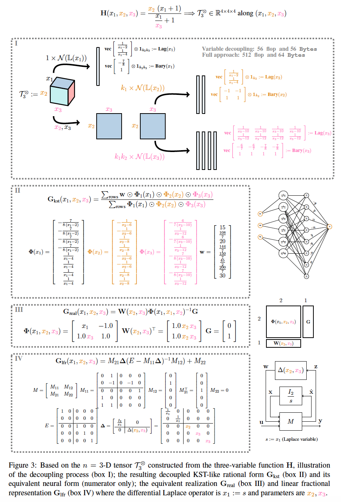

Data-driven fitting of multivariate functions with the Loewner framework
Data-driven approximate modeling
Multivariate, dynamical systems play a pivotal role in many applied mathematical problems where the behavior of the quantity of interest is conditioned by multiple variables $n \in \mathbb N$. In real-life applications, in addition to the time ($t$) or frequency ($s=\imath \omega=\imath2\pi f)$, these variables also include parameters that account for physical characteristics such as mass, length (in mechanical systems), flow velocity, temperature, porosity (in fluid, sound, antenna and material sciences), Mach number, altitude (in aeronautical and space systems), chemical properties, surface nature (in biological, pollutant and climate systems), etc. A commonly shared engineering approach for the study, the understanding, and the optimization of these applications is to develop models, essentially based on dedicated software and/or experiments. These models are central for most engineering activities involving forecasting, uncertainty propagation, uncertain stability analysis, optimization in a broad sense, and are essential in any multi-query (model-based) optimization process. However in most cases,
- it turns out that such models are costly to run, both in terms of time and energy footprint involved,
- their complexity limits the accuracy, scalability and applicability of state of the art methods, and
- the heterogenous nature of each multi-physics system and the explicit sparse (un)availability of models and data is an important development hurdle.
Two practical multivariate applications
(i) The aircraft flutter problem
First, we consider the flutter problem. Flutter is a potentially destructive phenomenon that occurs in flexible structures, such as bridges, buildings, and aeronautical structures, when immersed in a fluid flow field. It is a self-excited type of instability, characterized by the interaction of inertial, elastic, and aerodynamic forces acting on a structure. In the aeronautic industry, the aero-servo-elastic aircraft model can be described by the following components: (i) the structural part, characterized by the generalized inertia $M({m})$, damping $D({m})$ and stiffness $K({m})$ matrices, each parametrized by the mass ${m}$ of the aircraft, (ii) an aerodynamic model representing the generalized aerodynamic forces described in the frequency-domain by $F(s,{v})$ parametrized by $s$, the Laplace variable and ${v}$, the speed of the fluid, and (iii) the sensor and actuator locations defined by $C$ and $B(s,{m})$. The (parametric) aeroelastic model coupling the structural and aerodynamic parts is given by: $$ \left(s^2 M({m}) + s D({m}) + K({m}) \right) x(s) = F(s,{v}) x(s) + B(s,{m}) u(s) \text{ and } y(s) = Cx(s), $$ where $x(s) \in \mathbb C^{n_x}$ is the internal state vector, $u(s) \in \mathbb C$ is the input control signal and $y(s)\in \mathbb C$ is the quantity of interest (in practice, a combination of multiple measurements).
We assume that only input-output data are available. This results in a $3$-dimensional tensor $\mathcal T^{\otimes}_{3}\in \mathbb C^{300\times 10\times 10}$ along the variables $(s,{v},{m})$. By applying the mLF, an approximation of order $(21,1,1)$ along each variable ensues. The original and parametric reduced-order model frequency responses are shown in the figure below, resulting in an accurate model, appropriate for stability analysis and control design.

(ii) The acoustic-porous problem
Next, we analyze the propagation of acoustic waves in rigid-frame porous materials. This involves equivalent fluid model, depending on multiple parameters such as porosity and permeability. The corresponding models are defined through two complex-valued irrational functions, $\alpha(\omega,{\sigma_r},{\phi},{\overline{r}})$, the dynamic viscous tortuosity, and $\beta(\omega,{\sigma_r},{\phi},{\overline{r}})$, the dynamic thermal compressibility. Both depend on the frequency $\omega$, the porosity $\sigma_r$, the pore mean size $\phi$ and the pore standard deviation $\overline{r}$. These functions are then used to evaluate the impedance $Z(\omega,{\sigma_r},{\phi},{\overline{r}})$ and absorption $A(\omega,{\sigma_r},{\phi},{\overline{r}})$ responses. Being able to construct rational approximations of these irrational function is essential for optimization and time-domain simulation purpose.
Again, considering that only input-output measurements are available, the data is a $4$-dimensional tensor $\mathbb T^\otimes_{4}\in \mathbb C^{50\times 10\times 20\times 20}$ along the variables $(\omega,{\sigma_r},{\phi},{\overline{r}})$. Applying mLF, approximations of order $(9,1,5,6)$ for the $\alpha$ and $(8,1,6,5)$ for the $\beta$ function are conducted in seconds. Computing the material impedance ($Z$) and absorption ($A$) coefficients leads to the original and parametric rational reduced-order model frequency responses as shown in the figure below, resulting in an accurate model, appropriate for time-domain simulation and analysis.

Tensor-driven modeling and rational forms
Let us now step back from these two specific applications, and present the general problem. A unifying way to address practical issues encountered by engineers and applied mathematician in the multivariable approximation context, is by developing data-driven approaches (data as a multi-dimensional tensor), able to construct simplified models solely based on experimental or computed data (both real- and complex-valued). In the multi-dimensional setting, we refer to it as $n$-D tensor-based and $n$-variate model-based approximation.
Let us consider an unknown $n$-variable function $f(x_{1},x_{2},\cdots,x_{n})$, representing a process, an experimental setup, or any software simulation tool. Let us assume that $f$ can be evaluated over a finite discretization grid along each variable, each with finite dimensions $\{N_1,N_2,\dots,N_n\}\in\mathbb N$, thus leading to a tensorized data grid $\mathcal T^\otimes_n \in \mathbb C^{N_1\times N_2\times \cdots \times N_n}$.
$$ \left. \begin{array}{rcl} {\mathbf x_{1}} &=& \left[\begin{array}{cccc}x_{1}(1)&x_{1}(2)&\cdots&x_{1}(N_1)\end{array}\right]\\ {\mathbf x_{2}} &=& \left[\begin{array}{cccc}x_{2}(1)&x_{2}(2)&\cdots&x_{2}(N_2)\end{array}\right]\\ &\vdots& \\ {\mathbf x_{n}} &=& \left[\begin{array}{cccc}x_{n}(1)&x_{n}(2)&\cdots&x_{n}(N_n)\end{array}\right]\\ \end{array} \right\} \Rightarrow \mathcal T^{\otimes}_n $$

Illustation of a tensor data $\mathcal T^{\otimes}_n$.
The ultimate objective is to find $g(x_{1},x_{2},\cdots,x_{n})$ that approximates or recovers $f(x_{1},x_{2},\cdots,x_{n})$ and its intrinsic properties, without any prior knowledge on $H$. Within the model's numerous potential structures, multivariate rational are good candidates since they are directly tailored to integrate efficient existing simulation, control, analysis, and optimization tools, based on scalable linear algebra numerical methods.
Multivariate Loewner framework for rational approximation
Rational approximation seeks $n$-variate rational models $G$ described in the following numerically robust barycentric form: $$ g(x_{1},\cdots,x_{n}) = \dfrac{\sum_{j_1=1}^{k_1}\cdots\sum_{j_n=1}^{k_n} \dfrac{c(j_1,\cdots,j_n)w(j_1,\cdots,j_n)}{(x_{1}-\lambda_{1}(j_1))\cdots(x_{n}-\lambda_{n}(j_n))}}{\sum_{j_1=1}^{k_1}\cdots\sum_{j_n=1}^{k_n} \dfrac{c(j_1,\cdots,j_n)}{(x_{1}-\lambda_{1}(j_1))\cdots(x_{n}-\lambda_{n}(j_n))}} $$ where $x_{l}(j_l)$ denotes the $l$-th variable ($l=1,\cdots,n$); $\lambda_{l}\in\mathbb C$ is the $j_l$-th interpolation point along the $l$-th variable (being a splitting of the original data, namely the column $\lambda_{l}(j_l)$ and row $\mu_{l}(i_l)$ data; $w({j_1,\cdots,j_n})\in\mathbb C$ is the evaluation of the unknown $f$ at $(\lambda_{1}(j_1),\cdots,\lambda_{n}(j_n))$; and $c({j_1,\cdots,j_n})\in\mathbb C$ are the corresponding barycentric coefficients, being the entries of the right null-space of the $n$-D Loewner matrix $\mathbb L_n\in\mathbb C^{Q\times K}$ (with $Q=q_1q_2\dots q_n$ rows and $K=k_1k_2\dots k_n$ columns), an operator linking data to a matrix as $$ \begin{array}{ccl} \mathbb C^{k_1} \times\mathbb C^{q_1} \times \ldots \times \mathbb C^{k_n}\times \mathbb C^{q_n} \times \mathbb C^{(k_1+q_1)\times \cdots \times (k_n+q_n)} & \longrightarrow & \mathbb C^{Q\times K} \\ \left(\lambda_{1}(j_1),\mu_{1}(i_1),\ldots,\lambda_n(j_n),\mu_n(i_n),\mathcal T^\otimes_n\right) & \longmapsto & \mathbb L_n \end{array}. $$ This setup is known as the multivariate Loewner Framework (mLF). However, with increasing number of variable $n$ and tensor dimensions $N_l$, the Loewner matrix construction, storage, and null-space computation costs explode. The development of a numerical scheme allowing the construction of $g$ becomes essential to solve real-life problems in a reasonable time and with low computational energy and storage costs.
Tame the curse of dimensionality and rational KST
According to Richard E. Bellman, the "curse of dimensionality" (COD) refers to the phenomenon occurring when analyzing or ordering data in large dimensional spaces, which are not present in lower cases [Bellman, 1966]. In [Antoulas et al. 2025], the COD term refers to both the computational (floating-point arithmetic) and also to the storage (size on the disk) limitations encountered when constructing multivariate rational approximations from large multi-dimensional tensors. The following important contributions are established:
- mLF provides a solution for rational interpolation of multivariate functions and tensors.
- mLF addresses the Curse of Dimensionality occurring essentially when the number of variables and tensor size increase, thanks to the variable decoupling achieved by the solution of several 1-D Loewner problems instead of one large-scale $n$-D Loewner problem (see Figure 3-box I). As a byproduct, taming the curse of dimensionality
- in computational complexity, reducing from $\mathcal O(K^3)$ to $\mathcal O(K^{2.29})$ for $n=2$, $\mathcal O(K^{1.94})$ for $n=3$, up to $\mathcal O(K^{1.06})$ for $n=50$...;
- in storage, limited to the largest 1-D Loewner matrix, i.e. $\mathbb L_1\in\mathbb C^{\max_{l=1,\cdots n} k_l \times k_l}$ instead of $\mathbb L_n^{Q\times K}$; and
- in numerical accuracy, low complexity 1-D Loewner matrices null-space computation are solely needed, is achieved.
- mLF provides a numerically tractable solution to the Kolmogorov Superposition Theorem (KST) restricted to rational functions (see Figure 3-box II). A consequence is a direct connection with Kolmogorov-Arnold Networks (KANs), with Lagrange basis activation functions.
- mLF allows the construction of a realization associated with both the Lagrange basis or its equivalent monomial basis (see Figure 3-box III), thus allowing uncertain time-domain simulations and direct connection with control theory.
- mLF also permits a Linear Fractional Representation (LFR) form (see Figure 3-box IV), thus bridging the gap between tensor approximation with worst-case computation and robust control.
- mLF provides an accurate computed way faster than most of the existing methods, by exploiting the decoupling property directly from data.

Outlook
The mLF provides a solution to the approximation of multivariate (in $n$ variables) functions and $n$-D tensors. As it does not suffer from the curse of dimensionality, it opens the path to application to very complex real-life problems. Associated problems include uncertain and robust systems theory, identification, general approximation approach, nonlinear eigenvalue approximation, etc. Additional problems to consider are numerical issues such as conditioning, interpolation point selection, stability, and structure preservation, analysis of the minimality properties, and extension to multi-input multi-output configurations, to cite a few. The mLF package provides an open-source and turnkey package to implement and discover the features introduced. Fortran code (interfaced with MATLAB and Python) is also available in MDSPACK.